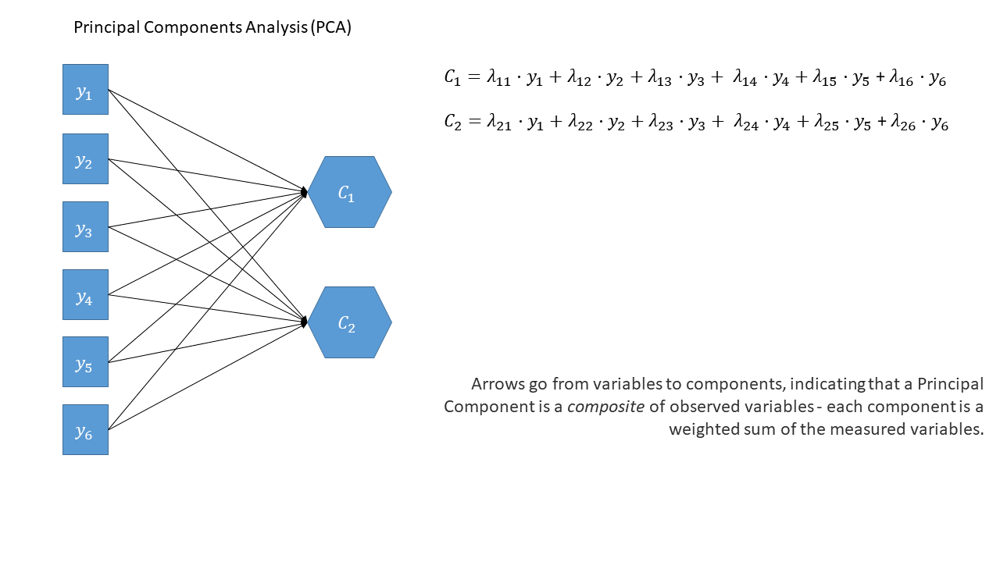

Week 8 Exercises: CFA
New packages
Make sure you have these packages installed:
- lavaan
- semPlot
the language of diagrams
It is common to think about confirmatory factor models (and structural equation models, which we will go on to learn about) in terms of the connections between variables when drawn on a whiteboard (and those that are left undrawn). By representing a theoretical model as paths to and from different variables, we open up a whole new way of thinking about how we model the world around us. These “path diagrams” have different shapes and symbols to denote the covariances, regressions, observed variables and latent variables.
- Observed variables are represented by squares or rectangles. These are the named variables of interest which exist in our dataset - i.e. the ones which we have measured directly.
- Latent variables are represented as ovals/ellipses or circles. These are unobserved variables that we can only reason about and have not (or cannot) directly measured.
- Covariances are represented by double-headed arrows. In many diagrams these are curved.
- Regressions are shown by single headed arrows (e.g., an arrow from \(x\) to \(y\) for the path \(y \sim x\)). Factor loadings are also regression paths - specifying a factor structure is simply to say that some measured variables \(y_1\,,\, ...\, ,\, y_k\) are each regressed onto some unmeasured factor(s). The formula \(y_1 = \lambda_1 \cdot F + u_1\) looks an awful lot like \(y = b \cdot x + \epsilon\), we just do not observe \(F\)!.
PCA as a diagram
Used for:
Reducing from a lot of correlated variables down to a smaller set of orthogonal (uncorrelated) components that capture a substantial amount of the variance. The components we get out are a bit like “composites” - they are a weighted sum of the original variables, and can be useful in subsequent analyses. For instance, if you have 20 predictors in a linear regression model that are highly correlated with one another (remember multicollinearity?), you might be able to instead use a small number of orthogonal components!
As a diagram
Note that the idea of a ‘composite’ requires us to use a special shape (the hexagon), but many people would just use a square.

optional: PCA in full
Principal components sequentially capture the orthogonal (i.e., perpendicular) dimensions of the dataset with the most variance. The data reduction comes when we retain fewer components than we have dimensions in our original data. So if we were being pedantic, the diagram for PCA would look something like the diagram below. If the idea of ‘dimensions’ of a dataset is still a bit confusing, you can see a fun 3-dimensional explanation here: PCA in 3D

EFA as a diagram
Used for:
EFA is generally used with the aim of understanding the underlying constructs or latent variables that may be driving observed patterns of responses or behaviors. Often used in construction of questionnaires, scale development, and in the initial stages of developing theoretical frameworks.
As a diagram
Exploratory Factor Analysis as a diagram has arrows going from the factors to the observed variables. Unlike PCA, we also have ‘uniqueness’ factors for each variable, representing the various stray causes that are specific to each variable. Sometimes, these uniqueness are represented by an arrow only, but they are technically themselves latent variables, and so can be drawn as circles.

When we apply a rotation to an EFA, we make it so that some loadings are smaller and some are higher - essentially creating a ‘simple structure’ (where each variable loads strongly on only one factor and weakly on all other factors). This structure simplifies the interpretation of factors, making them more distinct and easily understandable. With oblique rotations, we also allow factors to be correlated, as indicated by the double headed arrow between them in the diagram below

CFA as a diagram
Used for:
CFA is a method that allows us to assess the validity of a hypothesized factor structure (or to compare competing hypothesized structures). Typically factor structures fitted are ones that have been proposed based on theory or on previous research.
As a diagram
The diagram for a Confirmatory Factor Analysis model looks very similar to that of an exploratory factor analysis, but we now have the explicit absence of some arrows - i.e. a variable loads on to a specific factor (or factors - we can have a variable that loads on multiple), and not on others.
Note that this is a change from the ‘exploratory’ nature of EFA, to a situation in which we are explicitly imposing a theoretical model on the data.
Conduct Problems
Data: conduct_problems_2.csv
Last week we conducted an exploratory factor analysis of a dataset to try and identify an optimal factor structure for a new measure of conduct (i.e., antisocial behavioural) problems.
This week, we’ll conduct some confirmatory factor analyses (CFA) of the same inventory to assess the extent to which this 2-factor structure fits an independent sample. To do this, we have administered our measure to a new sample of n=600 adolescents.
We have re-ordered the questionnaire items to be grouped into the two types of behaviours:
Non-Aggressive Behaviours
| item | behaviour |
|---|---|
| item 1 | Stealing |
| item 2 | Lying |
| item 3 | Skipping school |
| item 4 | Vandalism |
| item 5 | Breaking curfew |
Aggressive Behaviours
| item | behaviour |
|---|---|
| item 6 | Threatening others |
| item 7 | Bullying |
| item 8 | Spreading malicious rumours |
| item 9 | Using a weapon |
| item 10 | Fighting |
The data are available as a .csv at https://uoepsy.github.io/data/conduct_problems_2.csv
Question 1
Read in the data. Take a look at the correlation matrix.

Question 2
Fit the proposed 2 factor model in lavaan.
The lavaan package
For the remaining weeks of the course, we’re going to rely heavily on the lavaan (Latent Variable Analysis) package. This is the main package in R for fitting structural equation models, and there is a huge scope of what we can do with it.
Operators in lavaan
The first thing to get to grips with is the various new operators which lavaan allows us to use.
Our standard multiple regression formula in R was specified as
y ~ x1 + x2 + x3 + ...In lavaan, we continue to fit regressions using the ~ symbol, but we can also specify the construction of latent variables using =~ and residual variances & covariances using ~~.
| Formula type | Operator | Mnemonic |
|---|---|---|
| latent variable definition | =~ |
“is measured by” |
| regression | ~ |
“is regressed on” |
| (residual) (co)variance | ~~ |
“is correlated with” |
| intercept | ~1 |
“has an intercept” |
| defined parameters | := |
“is defined as” |
(from https://lavaan.ugent.be/tutorial/syntax1.html)
Fitting models with lavaan
In practice, fitting models in lavaan tends to be a little different from things like lm() and (g)lmer(). Instead of including the model formula inside the fit function (e.g., lm(y ~ x1 + x2, data = df)), we tend to do it in a step-by-step process. This is because as our models become more complex, our formulas can pretty long!
In lavaan, it is typical to write the model as a character string (e.g. model <- "y ~ x1 + x2") and then we pass that formula along with the data to the relevant lavaan function such as cfa() or sem(), giving it the formula and the data: cfa(model, data = mydata).
- Specify the model:
mymodel <- "
factor1 =~ item1 + item2 + .....
factor2 =~ item6 + ......
...
..
"- Estimate the model (other fitting functions include
sem(),growth()andlavaan()):
myfittedmodel <- cfa(mymodel, data = mydata)- Examine the fitted model:
summary(myfittedmodel)The output of the summary() will show you each estimated parameter in your model. It groups these according to whether they are loadings onto latent variables, covariances, regressions, variances etc.
Question 3
Latent variable models like CFA come with a whole bucket load of ‘fit indices’ as metrics of how well our model is reflecting the observed data.
We can get out these indices by either asking for the most common fit indices to be printed inside all of our summary output:
summary(myfittedmodel, fit.measures = TRUE)Or by asking for all available indices with:
fitmeasures(myfittedmodel)
# to get just a select few, we can index the desired ones:
fitmeasures(myfittedmodel)[c("rmsea","srmr","tli","cfi")]Examine the fit of the 2-factor model of conduct problems to this new sample of 600 adolescents.
“Model Fit”
You’ll have heard the term “model fit” many times when learning about statistics. However, the exact meaning of the phrase is different for different modelling frameworks.
We can think more generally as “model fit” as asking “how well does our model reproduce the characteristics of the data that we observed?”. In things like multiple regression, this has been tied to the question of “how much variance can we explain in outcome \(y\) with our set of predictors?”1.
For methods like CFA, path analysis and SEM, we are working with models that run on covariances matrices, so “model fit” becomes “how well can our model reproduce our observed covariance matrix?”.
Degrees of Freedom
In regression, we could only talk about model fit if we had more than 2 datapoints. This is because there is only one possible line that we can fit between 2 datapoints, and this line explains all of the variance in the outcome variable (it uses up all our 2 degrees of freedom to estimate 1) the intercept and 2) the slope).
The logic is the same for model fit in terms of CFA and SEM - we need more degrees of freedom than we have parameters that are estimated.
The difference is that it is all in terms of our covariance matrix, rather than individual observations. The idea is that we need to be estimating fewer paths (e.g. parameters) than there are variances/covariances in our covariance matrix. This is because if we just fit paths between all our variables, then our model would be able to reproduce the data perfectly (just like a regression with 2 datapoints has an \(R^2\) of 1).
The degrees of freedom for methods like CFA, Path and SEM, that are fitted to the covariance matrix of our data, correspond to the number of knowns (observed covariances/variances from our sample) minus the number of unknowns (parameters to be estimated by the model).
- degrees of freedom = number of knowns - number of unknowns
- number of knowns: how many variances/covariances in our data?
The number of knowns in a covariance matrix of \(k\) observed variables is equal to \(\frac{k \cdot (k+1)}{2}\).
- number of unknowns: how many parameters is our model estimating?
We can reduce the number of unknowns (thereby getting back a degree of freedom) by fixing parameters to be specific values. By removing a path altogether, we are fixing it to be zero.
- number of knowns: how many variances/covariances in our data?
A model is only able to be estimated if it has at least 0 degrees of freedom (if there are as many knowns as unknowns). A model with 0 degrees of freedom is termed just-identified. An under-identified model is one with \(<0\) degrees of freedom, and an over-identified one has \(>0\) degrees of freedom.
Fit Indices
There are loads of different metrics that people use to examine model fit for CFA and SEM, and there’s lots of debate over the various merits and disadvantages as well as the proposed cut-offs to be used with each method.
The most fundamental test of model fit is a \(\chi^2\) test, which reflects the discrepancy between our observed covariance matrix and the model-implied covariance matrix. If we denote the population covariance matrix as \(\Sigma\) and the model-implied covariance matrix as \(\Sigma(\Theta)\), then we can think of the null hypothesis here as \(H_0: \Sigma - \Sigma(\Theta) = 0\). In this way our null hypothesis is that our theoretical model is correct (and can therefore perfectly reproduce the covariance matrix), therefore a significant result indicates poor fit. It is very sensitive to departures from normality, as well as sample size (for models with \(n>400\), the \(\chi^2\) is almost always significant), and can often lead to rejecting otherwise adequate models.
Alongside this, the main four fit indices that are commonly used are known as RMSEA, SRMR, CFI and TLI. Smaller values of RMSEA and SRMR mean better fit while larger values of CFI and TLI mean better fit.
Convention: if \(\textrm{RMSEA} < .05\), \(\textrm{SRMR} < .05\), \(\textrm{TLI} > .95\) and \(\textrm{CFI} > .95\) then the model fits well.
optional: absolute fit indices
optional: incremental fit indices
Question 4
Take a look at the loadings of our variables on to the latent factors (these are in the estimate column under “Latent Variables” in the summary()).
In EFA, our factor loadings were always <1, because they were standardised loadings (where the factor and item were both standardised to have a variance of 1). Because a latent variable is unobserved, it’s actually up to us how we define its scale! In CFA, the default is to make it have the same scale as its first item, which is why the first loading for each factor is exactly 1, and has no standard error associated with it - it’s fixed, rather than estimated.
Latent Variable Scaling
in Figure 2, we can see a the model of a latent factor loading on to 4 items. The number of paths to be estimated here is greater than the number of known covariances. However, we can get around this by fixing certain parameters to be specific values. In Figure 3, the latent factor variance is set at 1, and the residual factor loadings are also set to 1.
This has the additional benefit of making our latent factor have some defining features. Because we don’t actually measure the latent variable (it is a hypothetical construct), it doesn’t really have any intrinsic ‘scale’. When we fix the variance to be 1, we are providing some property (its variance) we create a reference from which the other paths to/from the variable are in relation to. A common alternative is to fix the factor loading of the first item to be 1 (see Figure 4).

Fit the model again, (assign it a new name so we can compare), but this time use:
cfa(model_syntax, data = ..., std.lv = TRUE)Do the fit measures such as TLI, CFI, RMSEA, SRMR etc., change at all? Do the loadings change at all? Can you see a link between these loadings and those from the previously fitted model?
Question Optional 5
We don’t actually even have to re-fit the model in order to get out standardised estimates.
Try doing:
mod.est <- cfa(model_syntax, data = ...)
summary(mod.est, std=TRUE)You’ll get some extra columns - can you figure out what they are?
Question 6
Make a diagram of your model, using the standardised factor loadings as labels.
The semPlot package
For more complex models with latent variables, we will almost always have to make diagrams manually, either in generic presentation software such as powerpoint or google slides, or in specific software such as TODO semdiag.
R has a couple of packages which work well enough for some of the more common model structures such as CFA.
The
library(semPaths)
semPlot(myfittedmodel,
what = ?, # line thickness & color by...
whatLabels = ?, # label lines as...
rotation = ? # rotations, +1 = 90degrees
)
optional: handy functionality!
Occasionally we might want to draw models before we even get the data. lavaan has some useful functionality where you can give it a model formula and ask it to “lavaanify” it into a model object that just hasn’t yet been fitted to anything.
For instance, by setting up a pretend model and “lavaanify-ing” it, we can then make a diagram!
pretend_model <- "
biscuits =~ digestive + oreo + custard_cream + bourbon + crackers
crisps =~ salt_vinegar + cheese_onion + prawn_cocktail + crackers
"
lavaanify(pretend_model) |>
semPaths()


Question 7
Make a bullet point list of everything you have done so far, and the resulting conclusions.
Then, if you feel like it, turn the bulleted list into written paragraphs, and you’ll have a write-up of your analyses!
“DOOM” Scrolling
Dataset: doom.csv
The “Domains of Online Obsession Measure” (DOOM) is a fictitious scale that aims to assess the sub types of addictions to online content. It was developed to measure 2 separate domains of online obsession: items 1 to 9 are representative of the “emotional” relationships people have with their internet usage (i.e. how it makes them feel), and items 10 to 15 reflect “practical” relationship (i.e., how it connects or interferes with their day-to-day life). Each item is measured on a 7-point likert scale from “strongly disagree” to “strongly agree”.
We administered this scale to 476 participants in order to assess the validity of the 2 domain structure of the online obsession measure that we obtained during scale development.
The data are available at https://uoepsy.github.io/data/doom.csv, and the table below shows the individual item wordings.
| variable | question |
|---|---|
| item_1 | i just can't stop watching videos of animals |
| item_2 | i spend hours scrolling through tutorials but never actually attempt any projects. |
| item_3 | cats are my main source of entertainment. |
| item_4 | life without the internet would be boring, empty, and joyless |
| item_5 | i try to hide how long i’ve been online |
| item_6 | i avoid thinking about things by scrolling on the internet |
| item_7 | everything i see online is either sad or terrifying |
| item_8 | all the negative stuff online makes me feel better about my own life |
| item_9 | i feel better the more 'likes' i receive |
| item_10 | most of my time online is spent communicating with others |
| item_11 | my work suffers because of the amount of time i spend online |
| item_12 | i spend a lot of time online for work |
| item_13 | i check my emails very regularly |
| item_14 | others in my life complain about the amount of time i spend online |
| item_15 | i neglect household chores to spend more time online |
Question 8
Assess whether the 2 domain model of online obsession provides a good fit to the validation sample of 476 participants.

Question 9
Are there any areas of local misfit (certain parameters that are not in the model (and are therefore fixed to zero) but that could improve model fit if they were estimated?).
modification indices
When a factor structure does not fit well, we can either start over and go back to doing EFA, deciding on an appropriate factor structure, on whether we should drop certain items, etc. The downside of this is that we essentially result in another version of the scale, and before we know it, we have 10 versions of the same measure floating around, in a perpetual state of scale-development. Alternatively, we can see if it is possible to minimally adjust our model based on areas of local misfit in order to see if our global fit improves. Note that this would still be in a sense exploratory, and we should be very clear when writing up about the process that we undertook. We should also avoid just shoving any parameter in that might make it fit better - we should let common sense and theoretical knowledge support any adjustments we make.
The modindices() function takes a fitted model object from lavaan and provides a table of all the possible additional parameters we could estimate.
The output is a table, which we can ask to be sorted according to the mi column using sort = TRUE.
modindices(myfittedmodel, sort = TRUE) lhs op rhs mi epc sepc.lv sepc.all sepc.nox
72 item6 ~~ item10 10.747 0.082 0.082 0.144 0.144
25 fact1 =~ item7 8.106 0.119 0.080 0.080 0.080
65 item5 ~~ item7 6.720 0.039 0.039 0.160 0.160
71 item6 ~~ item9 6.675 -0.065 -0.065 -0.115 -0.115
. ... . ... ... ... ... ... ...The columns show:
lhs,op,rhs |
mi |
epc |
sepc.lv, sepc.all,sepc.nox |
|---|---|---|---|
these three columns show the specific parameter, in lavaan syntax. So fact1 =~ item7 is for the possible inclusion of item7 being loaded on to the latent variable fact1. item6 ~~ item10 is for the inclusion of a covariance between item6 and item10, and so on. |
“modification index” = the change in the model \(\chi^2\) value were we to include this parameter in the model | “expected parameter change” = the estimated value that the parameter would take were it included in the model | these provide the epc values but scaled to when a) the latent variables are standardised, b) all variables are standardised, and c) all except exogenous observed variables are standardised (not relevant for CFA) |
Often, the sepc.allis a useful column to look at, because it shows the proposed parameter estimate in a standardised metric. i.e. if the op is ~~, then the sepc.all value is a correlation, and so we can consider anything <.2/.3ish to be quite small. If op is =~, then the sepc.all value is a standardised factor loading, so values >.3 or >.4 are worth thinking about, and so on.
Question 10
Looking carefully at the item wordings, decide on whether any adjustments suggested by their modification indices make sense.
If any do, then add these to your model and re-fit it. Does this new model fit well?
What’s the aim here?
It’s likely you will have to make a couple of modifications in order to obtain a model that fits well to this data.
It’s very important to think critically here about why such modifications may be necessary. Making adjustments to the model could simply mean that the underlying structure of “online obsession” differs in this population from the one for which it was developed. This is called “non-invariance”2 - and there are lots of studies looking at how the measurement model of a psychological construct varies cross-culturally, or varies with age (e.g., “anxiety” probably has a different structure when you are a child from when you are a teenager, and from when you are an adult, and so on).
Alternatively, it could just be that our initial scale is not very appropriate for the current use. This could be because it was developed long ago, and the factor structure has since changed (e.g., “online obsession” is probably very different from what it was 20 years ago). Or it could be that the sample data for which it was developed were not very representative of the population of interest.
In these cases, the adjustments you make to the model are of key interest. For instance, seeing how an ‘anxiety’ measurement model varies as people age helps us to think about how ‘anxiety’ might be differing across age, and how best to measure it for young and old people.
Additionally, and this is likely in the case of the “DOOM” scale, it could be that that the person who made the items (ahem, me) doesn’t really know anything about the construct they are talking about, and didn’t put much care into constructing the items!
Question 11
Construct a diagram of your model.

Optional Extra Exercises for the Enthusiastic
Dataset: radakovic_das.csv
Apathy is lack of motivation towards goal-directed behaviours. It is pervasive in a majority of psychiatric and neurological diseases, and impacts everyday life. Traditionally, apathy has been measured as a one-dimensional construct but is in fact composed of different types of demotivation.
Dimensional Apathy Scale (DAS) The Dimensional Apathy Scale (DAS) is a multidimensional assessment for demotivation, in which 3 subtypes of apathy are assessed:
- Executive: lack of motivation for planning, attention or organisation
- Emotional: lack of emotional motivation (indifference, affective or emotional neutrality, flatness or blunting)
- Initiation: lack of motivation for self-generation of thoughts and/or actions
The DAS measures these subtypes of apathy and allows for quick and easy assessment, through self-assessment, observations by informants/carers or administration by researchers or healthcare professionals.
You can find data for the DAS when administered to 250 healthy adults at https://uoepsy.github.io/radakovic_das.R, and information on the items is below.
DAS Dictionary
All items are measured on a 6-point Likert scale of Always (0), Almost Always (1), Often (2), Occasionally (3), Hardly Ever (4), and Never (5). Certain items (indicated in the table below with a - direction) are reverse scored to ensure that higher scores indicate greater levels of apathy.
| item | direction | dimension | question |
|---|---|---|---|
| 1 | + | Executive | I need a bit of encouragement to get things started |
| 2 | - | Initiation | I contact my friends |
| 3 | - | Emotional | I express my emotions |
| 4 | - | Initiation | I think of new things to do during the day |
| 5 | - | Emotional | I am concerned about how my family feel |
| 6 | + | Executive | I find myself staring in to space |
| 7 | - | Emotional | Before I do something I think about how others would feel about it |
| 8 | - | Initiation | I plan my days activities in advance |
| 9 | - | Emotional | When I receive bad news I feel bad about it |
| 10 | - | Executive | I am unable to focus on a task until it is finished |
| 11 | + | Executive | I lack motivation |
| 12 | + | Emotional | I struggle to empathise with other people |
| 13 | - | Initiation | I set goals for myself |
| 14 | - | Initiation | I try new things |
| 15 | + | Emotional | I am unconcerned about how others feel about my behaviour |
| 16 | - | Initiation | I act on things I have thought about during the day |
| 17 | + | Executive | When doing a demanding task, I have difficulty working out what I have to do |
| 18 | - | Initiation | I keep myself busy |
| 19 | + | Executive | I get easily confused when doing several things at once |
| 20 | - | Emotional | I become emotional easily when watching something happy or sad on TV |
| 21 | + | Executive | I find it difficult to keep my mind on things |
| 22 | - | Initiation | I am spontaneous |
| 23 | + | Executive | I am easily distracted |
| 24 | + | Emotional | I feel indifferent to what is going on around me |
Question 12
Read in the data. It will need a little bit of tidying before we can get to fitting a CFA.
If you haven’t already, check out the page on Data Wrangling for Surveys & Questionnaires.
Question 13
How well does the 3-dimensional model of apathy fit to this dataset?
Hints
You’ll have to use the data dictionary to figure out which items are associated with with dimensions.
Question 14
Much like for EFA, we can estimate individuals’ scores on the latent factors. In lavaan, the function lavPredict() will get us some estimates.
However, for a clinician administering the DAS to a patient, this option is not available. Instead, it is common that scores on the individual items associated with a given factor are used to create a sum score or a mean score which can be used in a practical setting (e.g., scores above a given threshold might indicate cause for concern).
Calculate sum scores for each of the dimensions of apathy.
Hints
You’ll need to reverse some items first! See Data Wrangling for Surveys #reverse-coding.
optional: what is a sum score but a constrained factor model?
Computing sum scores can feel like a ‘model free’ calculation, but actually it does pre-suppose a factor structure, and a much more constrained one than those we have been estimating. For a full explanation of this, see “Thinking twice about sum scores”, McNeish & Wolf 2020.